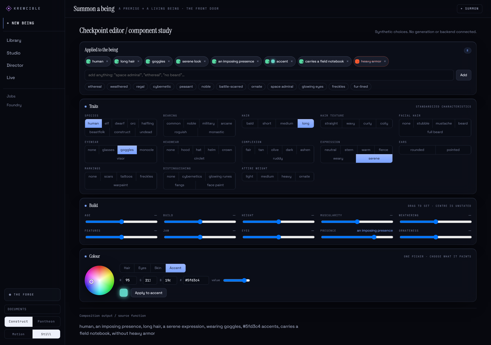

Start with four traits.
The first state has four traits: human, arcane bearing, short hair and a serene look. Each one sits in the list at the top of the editor with its own button to remove it.
Work Krewcible
Krewcible · Character editorI wanted to shape a character from choices I could see, change and take back one at a time, before anything gets generated. Krewcible's editor keeps every choice in one list and writes that list out as a plain sentence.
Component study · the editor's own controls, recorded September 19, 2026, with made-up choices

After changes: long hair, goggles, a teal accent, a field notebook and an imposing presence, with heavy armor excluded and arcane bearing removed. All eight choices appear in the sentence at the bottom.
Thirty-six seconds of the editor's own controls. Every change shows up twice: in the list of choices and in the sentence underneath it.
"human, a arcane bearing, short hair, a serene expression"
"human, an imposing presence, long hair, a serene expression, wearing goggles, #5fd3c4 accents, carries a field notebook, without heavy armor"
"A arcane bearing" is the app's own wording, kept exactly as it came out.
The editor builds its sentence from the list by fixed rules, so the same choices always give the same sentence. That sentence is the request, readable before anything would be generated.
"Applied to the being" shows every active choice. Each one has its own button to take it back.
Thirteen trait groups, ten build sliders and a box for typed entries. A slider left at its center says nothing.
One picker paints the hair, eyes, skin or an accent, and shows the exact color value.
Typing "no heavy armor" adds a crossed-out choice, and the sentence says "without heavy armor".
The larger Krewcible idea is a workstation for characters, scenes and assets across 2D, 3D and video work. This page covers one part of it: the editor inside the app screen called Summon a being.
A polished screen can't show that the generation behind it works. So I chose to run the editor's own controls in a small study, apart from the rest of the app, with made-up choices: change traits, take one back, and read the list and the sentence that result.
The captures keep Krewcible's own look. Its screens are dark blue-black, with large serif headings, small tight controls and small capital labels that say what each panel does. Orange marks the one choice that's excluded.
Three steps through the recording, from the first four traits to the finished request.
The first state has four traits: human, arcane bearing, short hair and a serene look. Each one sits in the list at the top of the editor with its own button to remove it.
Long hair replaces short hair and goggles go on. A field notebook and "no heavy armor" are typed in, a teal accent is applied and presence goes up. Last, arcane bearing comes off.
The final list holds four trait choices, a presence setting, an accent color and two typed entries. "No heavy armor" counts as one of those eight.
I decide what each project is for and check what comes back. Here I wanted a character made of choices that stay in view and can each be taken back, gathered into one readable request before anything is generated.
AI tools write the code. For this page, an AI assistant set up the study and made the recording and the two captures.
The study ran existing checkpoint-editor components on their own, with made-up choices. Both captures show the same controls: thirteen trait groups, ten build sliders and the color picker. The "Composition output" line under the editor was added for the study so the sentence is visible. The sentence itself comes from the app's own composing code, which follows fixed rules.
| Item | Recorded value |
|---|---|
| Prepared | September 19, 2026 |
| Recording | 36.44 seconds, silent, with descriptive captions |
| Initial state | 4 choices, all of them traits |
| After changes | 8 choices |
| Taken back | arcane bearing |
| The eight choices | 4 trait choices, 1 presence setting, 1 accent color, 2 typed entries |
| Exclusion | "no heavy armor", counted among the eight |
| Scope | The editor's components, run on their own |
The captures show Krewcible's own fonts, Instrument Serif, Space Grotesk and JetBrains Mono, as pixels only. Where each came from, and its original notice, are kept with the private preparation records, as Sources and records explains.